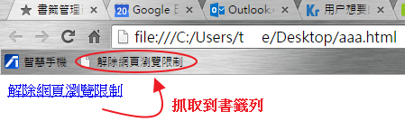

解除網頁鎖滑鼠左右鍵、無法選取複製內容限制
有一些網頁會自動鎖滑鼠左右鍵，
當看到某一段落好想要反白選取文字摘錄下來做筆記就很麻煩。
變成要手Key，不然就去下載網頁原始碼然後一段一段的把tag去掉複製過來。
雖然這麼做看似可以防止被其他人盜用文章，但其實是防君子不防小人，
連要複製電話、地址等文字都沒辦法，對找資料的人來說更是一大麻煩。
老早就想研究解鎖右鍵方法了，例如痞客邦都有提供一些鎖右鍵功能。
以下列出三種解右鍵方式
一、於瀏覽器之開發者工具裡的 console 下指令
於Devtool裡的console下指令，針對body裡的ondragstart、oncontextmenu、onselectstart接設定為true即可。
語法：
開啟右鍵選單
$("body").attr("oncontextmenu",true)
或等於document.body.oncontextmenu = function() { return true; }
開啟文字選取功能
$("body").attr("onselectstart",true)
或等於document.body.onselectstart = function() { return true; }
開啟抓取文字功能
$("body").attr("ondragstart",true)
或等於document.body.ondragstart = function() { return true; }
二、直接將瀏覽器的 javascript 功能關掉
於瀏覽器按 F12 開啟開發者工具，並於右上角的 settings 選單裡關掉 javascript。
這是萬解法，一些鎖右鍵功能絕大部份都是利用 javascript 來辦到的，
只要到關掉 javascript，99% 的問題都可以處理掉。
三、將解右鍵 JS 程式碼做成超連結
最近從一位吳鳳科大生所提供的一種方法，很特別。
就是利用超連結包含JS程式碼來完成解鎖滑鼠左右鍵，
1、準備一個網頁，裡面包含html程式碼
<a href="javascript: document.getElementsByTagName('body')[0].setAttribute('oncontextmenu', 'return true'); document.oncontextmenu = function () { window.event.returnValue = true; }; document.onselectstart = new Function('event.returnValue=true;')"> 解除網頁瀏覽限制 </a>
看javascript程式碼內容作法跟jQuery是大同小異的，
個人目前javascript不熟，不過我可以幫整理架構出來好理解。
2、然後再將該超連結做成書籤(我的最愛)

3、使用
至目標網頁並點選上步驟所做的超連結即可完成解鎖。
四、CSS 解右鍵
也有看過使用CSS的user-select屬性來處理的，如下範例
<!DOCTYPE html> <html> <head> <meta charset="utf-8"> <meta name="viewport" content="width=device-width"> <style> .none-selected { user-select: none; } .text-selected { user-select: text; } .all-selected { user-select: all; } </style> </head> <body> <p class="none-selected">none-selected</p> <p class="text-selected">text-selected</p> <p class="all-selected">all-selected</p> </body> </html>
五、成果分享 - 將解右鍵 JS 程式碼做成超連結
經由以上的說明，分享我個人補加上去的javascript程式碼
javascript: document.body.oncontextmenu = function () { return true; }; document.oncontextmenu = function () { return true; }; document.onmousemove = function () { return true; }; document.onmousedown = function () { return true; }; document.body.onselectstart = function () { return true; }; document.onselectstart = function () { return true; }; document.ondragstart = function () { return true; }; document.onkeydown = function (event) { var e = event || window.event; if (e.ctrlKey && e.keyCode === 67) { return true; } }; document.oncontextmenu = function () { window.event.returnValue = true; }; document.oncontextmenu = new Function('event.returnValue=true;'); document.body.style.setProperty("user-select", "text");
参考資料：